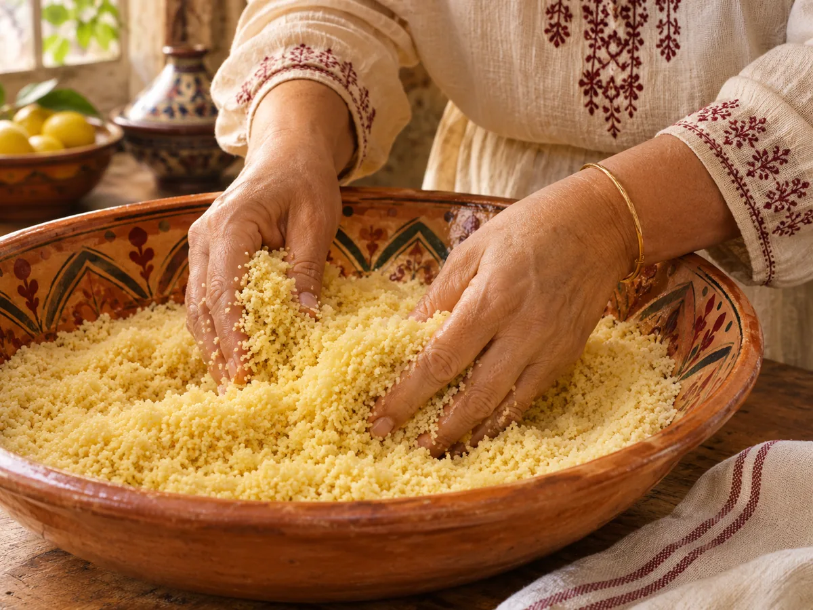

עלינו
באתר הזה אספנו שישה מתכונים שאנחנו אוהבים להכין בבית, מתבשילים ארוכים ועד מאפים וסלטים.
ניסינו לכתוב כל מתכון בצורה קצרה וברורה כדי שיהיה נוח לעקוב אחריו בזמן הבישול.

הודעת פתיחה
אפשר לשמוע את הודעת הפתיחה של האתר כאן:
מפה
מקור רוב המתכונים באתר הוא מהמטבח התוניסאי.
צרו איתנו קשר
יש לכם מתכון שתרצו לשתף או שאלה? מלאו את הטופס:
הטופס באתר הוא לתרגול בלבד ולא שולח הודעות.